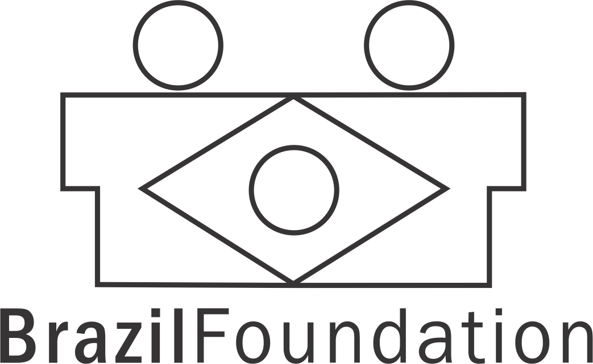

O Projeto Crianças Felizes é uma uma iniciativa do Luciano Daniel, jovem morador do alemão, que aos 13 anos de idade fundou o projeto na intenção de reduzir as mazelas trazidas pelas obras do Pac.
Depois que o Programa do Governo Federal passou pela comunidade, uma série de problemas começaram a surgir, como esgoto a céu aberto, entulhos das casas derrubadas, acúmulo de lixo em local impróprio para o descarte.
Em 4 de maio de 2013, o projeto surge como forma de resistência, promovendo desde então, mais de 20 ações que beneficiaram mais de 8.000 crianças.
PARCEIROS
